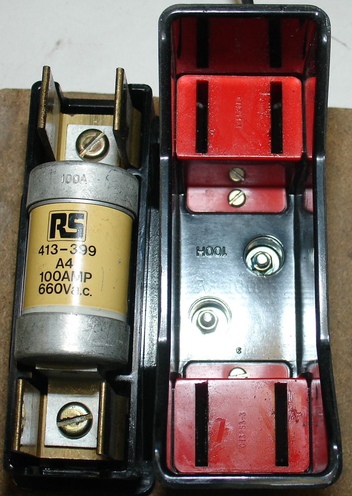

Wiring decisions
Solar fuses vs breakers: what to use (and where)
You don’t need every protection device on the market. You need the right devices in the right places, with DC ratings that match your system. This page helps you choose without turning your build into a guessing game.
Key takeaways
- Fuses and breakers both provide overcurrent protection, but they’re not interchangeable in every DC application.
- The best “upgrade” is often better placement and correct DC ratings, not more devices.
- Battery-to-inverter protection is commonly the highest priority because currents can be high.
Quick answer (for most small systems)
Think of it this way: the reader is the hero trying to keep a system safe and serviceable. The “guide” (this site) gives you a simple plan: protect the high-current paths, add safe isolation points, and verify DC ratings.
- Use fuses where you want simple, fast protection and you’re fine replacing the device after it trips.
- Use DC-rated breakers where resettable protection (and sometimes switching) is useful.
- Use disconnects for safe service isolation (disconnects are not automatically overcurrent protection).
What each device is good at
Fuses (simple, fast, one-time)
A fuse is a deliberate weak link: it opens when current exceeds its rating. Many solar builds use fuses on the battery side because they’re straightforward and come in high-current options.
Breakers (resettable, but DC ratings matter)
A breaker is resettable and can be convenient for testing or maintenance. The key is that DC interrupt ratings and voltage ratings must match your design.

{kind=link}
Pros and cons at a glance
- Fuses: simple, fast, and compact, but require replacement after a trip.
- Breakers: resettable and often used as a disconnect, but must be DC-rated and properly matched to the circuit.
- Disconnects: great for service isolation, but not always overcurrent protection.
The best choice depends on where the device lives in the circuit and how often you want to reset or isolate it.
Cost and availability
High-current DC fuses are often less expensive than DC breakers at the same rating. Breakers add convenience but can cost more, especially at higher voltages.
For small systems, a mix of both can be cost-effective: a fuse for primary battery protection and a breaker where you want a switchable disconnect.
The five places people get protection wrong
1) Battery-to-inverter protection
This is often where current is highest. Protection choices here should be tied to the inverter’s real draw, surge behavior, and the cable run.
2) Controller-to-battery protection
Charge controllers can deliver substantial current into batteries. Protection here is about preventing wiring faults from turning into overheating or damage.
3) PV strings / combiner protection
Arrays with multiple strings may need string-level protection depending on the design. The safest approach is to follow the charge controller/combiner guidance for your configuration and voltage.
4) Loads and DC distribution
Small branch circuits (lights, DC outlets, fans) are where a clean distribution approach improves reliability. The goal is predictable protection, not “one big fuse for everything.”
5) Confusing disconnects with overcurrent protection
A disconnect makes a system safer to service, but it doesn’t necessarily protect wiring from overcurrent. Make sure you have both jobs covered where required.
A shopping checklist that prevents unsafe mismatches
- DC voltage rating: must be at or above your system voltage (and any array/open-circuit voltage where applicable).
- Interrupt rating: the device must be able to safely open the circuit under fault conditions.
- Current rating: match the circuit’s expected maximum current with appropriate design margin.
- Temperature/environment: some devices are not meant for heat, moisture, or outdoor exposure.
- Compatibility: match lugs, bus bars, cable size, and enclosure space.
Maintenance and testing tips
After installation, check for heat at terminals after a period of heavy load. Warm connections often indicate resistance or loose lugs.
Label circuits and keep spare fuses on hand. For breakers, verify that they are rated for repeated switching if you plan to use them as a routine disconnect.
Example protection layout
A typical off-grid layout is: PV strings with fuses, controller breaker to the battery, and a high-current fuse between the battery and inverter. This keeps each high-current path protected.
For smaller systems, a main battery fuse plus a controller breaker may be enough if branch circuits are still protected downstream.
Labeling and documentation
Label protection devices so you know which circuit they protect. Clear labeling speeds troubleshooting and reduces mistakes during maintenance.
A small legend inside the enclosure saves time during troubleshooting quickly.
Expansion note
If you add panels or a larger inverter, revisit protection sizes. Protection must match the new circuit capacity and cable size.
Cold weather note
PV voltage rises in cold conditions. Verify that protection devices are rated for your highest expected voltage.
Common mistakes (risk → symptom → fix direction)
- Using AC breakers on DC circuits: can fail to interrupt safely; only use devices rated for your DC application.
- Protection too far from the battery: leaves more unprotected cable length than intended.
- Sizing protection to “what I plan to use”: protection should match potential circuit current, not a guess of normal usage.
- Using a disconnect as protection: different job; verify you have overcurrent protection where required.
FAQ
Do I need a fuse and a breaker?
Sometimes. Many systems use a fuse for primary protection and a breaker for convenience or isolation on certain circuits.
What does DC-rated actually mean?
It means the device is designed and tested to interrupt DC current safely at a specified DC voltage and fault level.
Where should the battery fuse go?
Placement is design- and code-dependent, but the core idea is to protect the wiring connected to the battery from fault current.
Do solar panels need fuses?
Some multi-string arrays do, depending on configuration. Follow controller or combiner guidance and verify array voltage ratings.
Can a breaker be used as a switch?
Only if it is rated for that use. Some DC breakers are designed for switching; others are not.
Should I prioritize a disconnect or a breaker?
Use a disconnect for service isolation and a breaker or fuse for overcurrent protection. Some breakers can serve both roles.